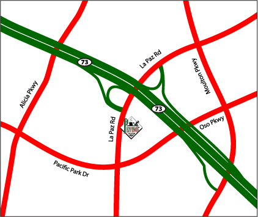

|
Aliso Viejo is our fabulous Pizzeria, a place where you can get gourmet
pizzas such as Pizza alla Giuseppe made fresh to order. We also carry a
variety of specialty dishes created and served at this location only,
such as the extremely popular Pasta Colorado. This location
also has a patio for enjoyable outdoor dining.
Phone : 949 643-1355 FAX : 949-643-9226 Located at: 26952 La Paz Road Aliso Viejo, CA 92656 
|
 | ||||